故事地圖
聖經、宣教、中國歷史、大航海、台灣百年。疊上老地圖，跟著時間軸走一遍。
宣教史
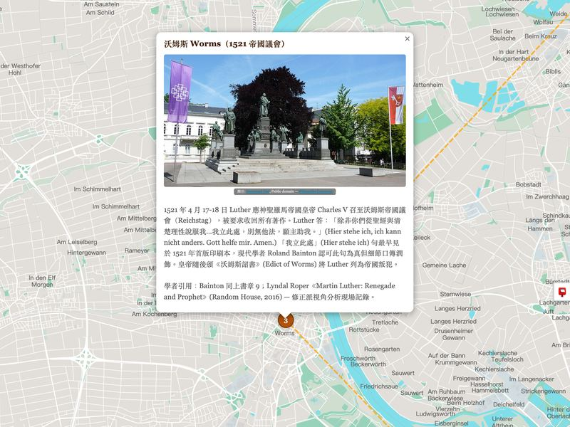
馬丁路德宗教改革
AD 1517 — 1546 從 95 條到艾斯雷本
奥古斯丁修士 Martin Luther 1517 釘 95 條於威騰堡啟動宗教改革，1521 沃姆斯議會「我立此處」拒絕收回；瓦特堡譯德文聖經塑造現代德語。29 年改革神學遺產含「因信稱義」「唯獨聖經」「萬民皆祭司」。
1 條路線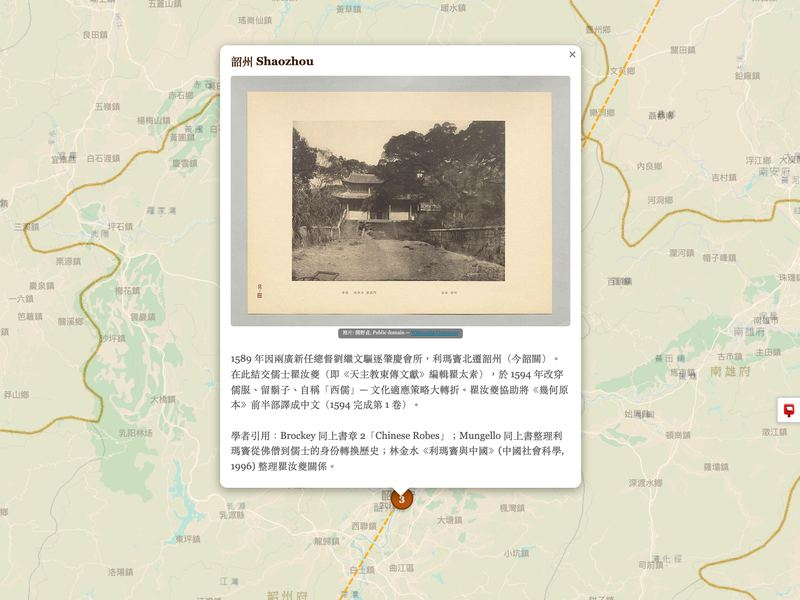
利瑪竇明清來華
AD 1582 — 1610 從澳門到北京 28 年
義大利耶穌會士 Matteo Ricci 從澳門入華，學中文書畫《山海輿地全圖》、改穿儒服自稱「西儒」、北上 1601 入京覲見萬曆獻自鳴鐘。在徐光啟協助下完成《幾何原本》漢譯，1610 卒葬北京柵欄墓 — 中國皇帝首次特准外國傳教士葬地。文化適應宣教典範。
1 條路線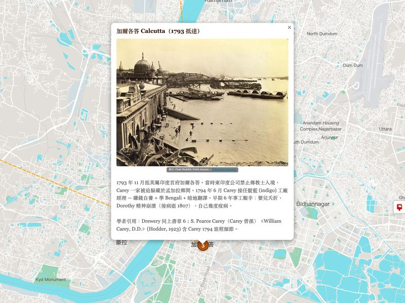
威廉凱瑞印度宣教
AD 1792 — 1834 從諾丁罕到 Serampore 41 年
「現代宣教之父」William Carey 1792 諾丁罕啟動 Particular Baptist Society，1793 抵加爾各答，1800 Serampore Trio 創立 Mission：譯印度六大語系聖經、創亞洲第一所 grant-degree 學府 Serampore College、推動禁絕寡婦殉葬。
1 條路線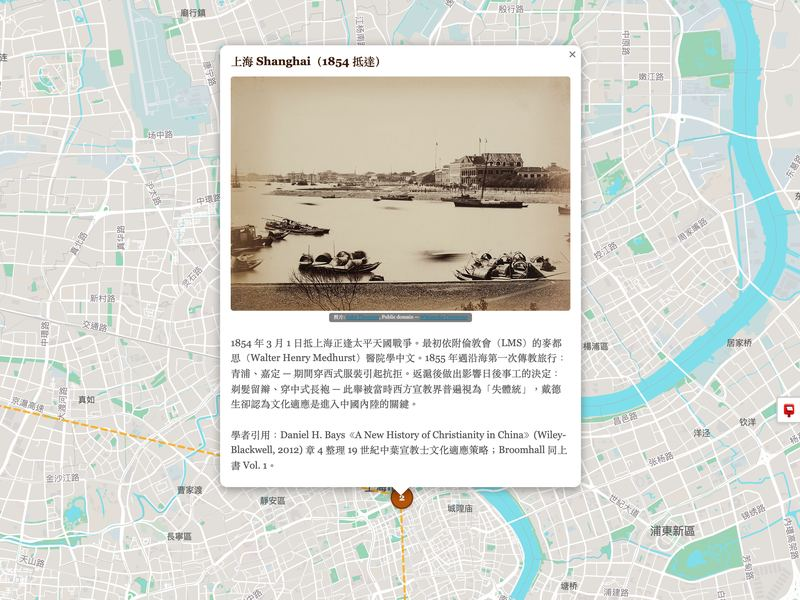
戴德生中國內地會
AD 1853 — 1905 從倫敦到鎮江 50 年
英國宣教士 James Hudson Taylor 1853 抵滬，1865 倫敦布萊頓海岸異象創立中國內地會（CIM）。1866 Lammermuir 號 22 人抵杭州設總部，次 40 年 CIM 進入中國 18 省含內陸 11 省。1900 義和團事變殉道 58 名宣教士，1905 卒葬鎮江西郊馬利亞墓旁。CIM 1965 改名 OMF International 持續事工。
2 條路線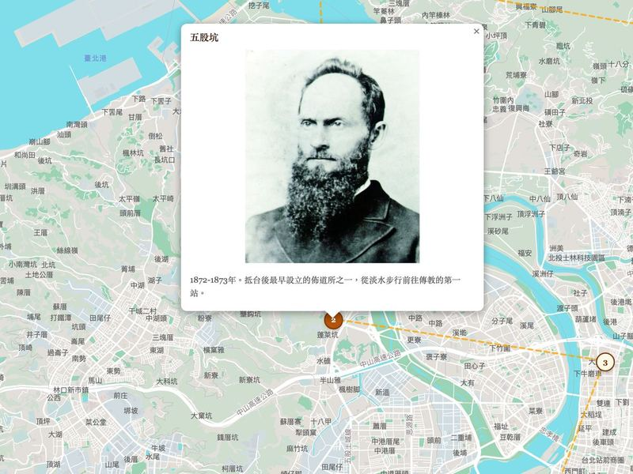
台灣宣教士腳蹤
1865-1923
探索十九世紀宣教士在台灣的足跡
5 條路線聖經地圖
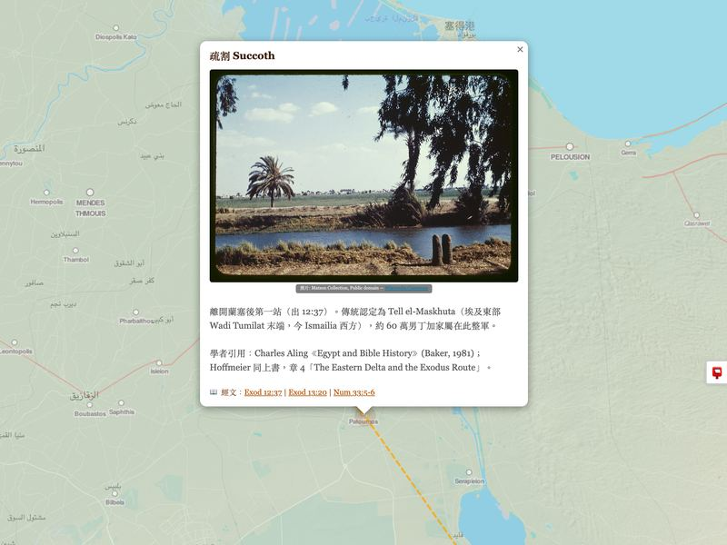
出埃及進迦南
BC 1446 — 1406 從歌珊到示劍
以色列人在埃及為奴 430 年後，摩西帶領他們離開蘭塞、過紅海、頒律法於西奈山；40 年後新世代從加低斯北上，渡過約旦河，征服迦南中央山地，在示劍立約。本路線採早期出埃及論（BC 1446），路線爭議地點 desc 標明各派立場與學者引用。
2 條路線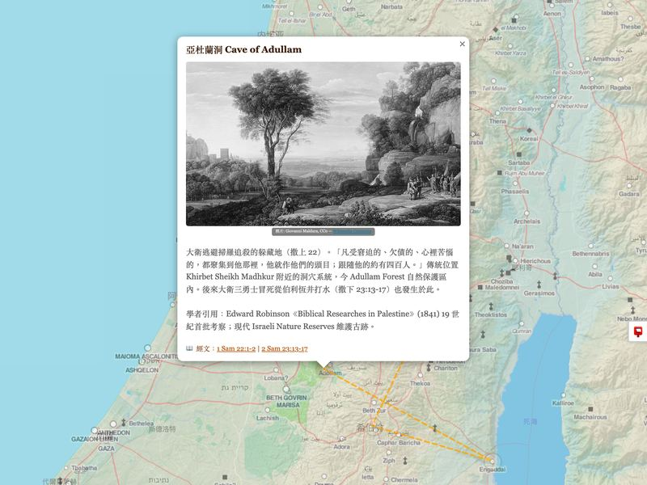
大衛王生平
BC 1010 — 970 從伯利恆到耶路撒冷
少年牧羊人從伯利恆受撒母耳膏立，在以拉谷以彈弓擊敗歌利亞名震以色列；流亡曠野召聚 400 人，於希伯崙作猶大王 7 年，最終攻克錫安建立耶路撒冷為京都。在位 33 年間經歷拔示巴與烏利亞、押沙龍叛變等宮廷悲劇，晚年所羅門在基遍蒙神顯現繼承王位。
2 條路線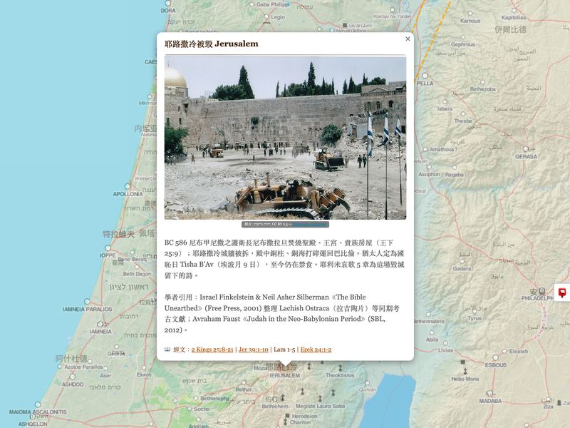
巴比倫被擄歸回
BC 605 — 432 從聖殿被毀到城牆重建
BC 586 尼布甲尼撒焚燒聖殿開啟猶大 70 年被擄；BC 539 居魯士滅巴比倫頒詔允許歸回。三波歸回（所羅巴伯/以斯拉/尼希米）跨越 100 年完成聖殿（BC 516）與城牆（BC 445）重建。本故事 9 spots 從卡爾凱米戰役到尼希米 52 天城牆完工。
2 條路線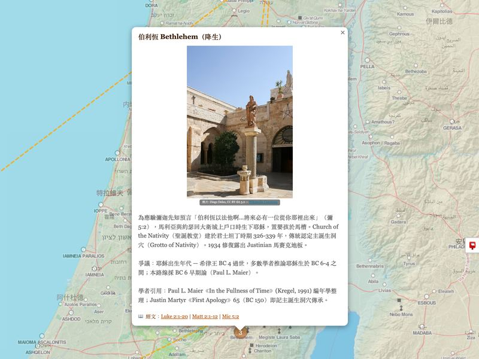
耶穌降生
BC 6 — AD 12 從拿撒勒到聖殿
加百列向馬利亞報訊，與約瑟在伯利恆生下嬰孩耶穌；逃亡埃及避希律屠殺、返拿撒勒成長、12 歲於聖殿與教師問答。本路線採 BC 6 早期年代論，補完 jesus-galilee 受洗前的童年敘事。
1 條路線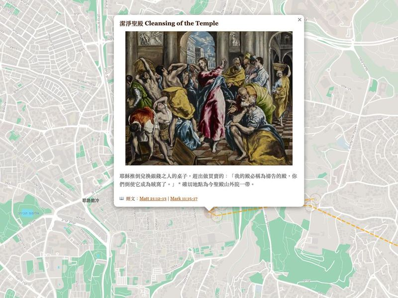
耶穌受難週
從榮耀進城到復活顯現
七天敘事：進城、受難、復活——耶路撒冷的互動地圖
3 條路線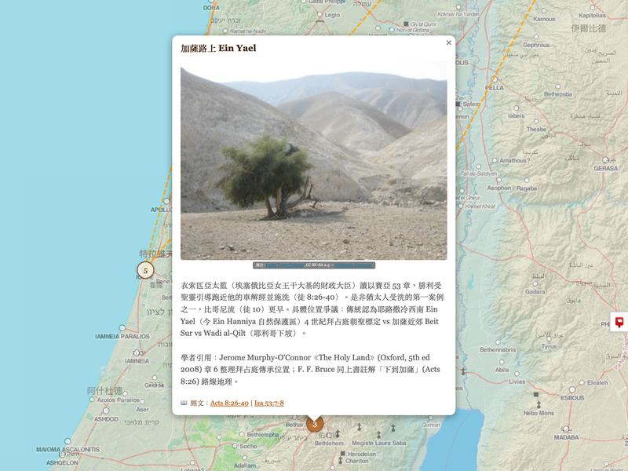
使徒行傳早期教會
AD 30 — 46 從耶路撒冷到安提阿
耶穌升天後 10 日五旬節聖靈降臨於馬可樓 120 門徒，當日 3000 人受洗誕生耶路撒冷教會。司提反殉道引發逼迫使福音擴散至撒馬利亞、海岸、敘利亞；衣索匹亞太監受洗、彼得屋頂異象後接納哥尼流、安提阿教會「基督徒」首稱並差遣保羅出航。
1 條路線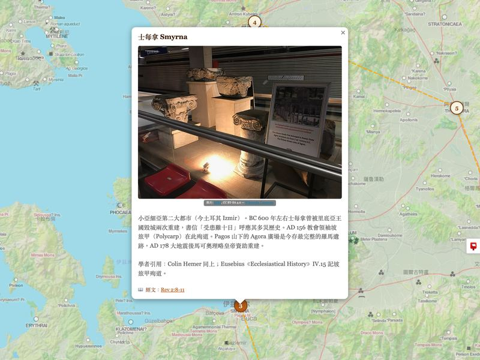
啟示錄七教會
AD 95 約翰書信巡迴小亞細亞
使徒約翰在拔摩島受啟示，書信沿羅馬郵差路線送往小亞細亞 7 座城——以弗所、士每拿、別迦摩、推雅推喇、撒狄、非拉鐵非、老底嘉。每封書信責備或稱讚呼應該城的歷史與地理特性，是啟示錄 1-3 章的地理底本。
1 條路線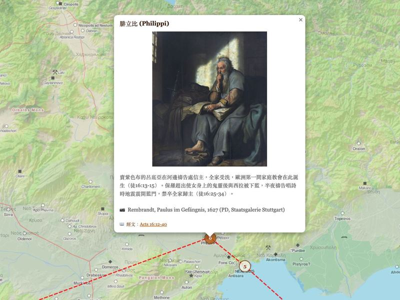
使徒保羅宣教路線
AD 46-62 使徒行傳三次旅行與押解羅馬
使徒保羅一生四度橫渡地中海，從敘利亞安提阿三次差遣出航，把福音帶進小亞細亞、馬其頓、亞該亞，最後押解羅馬受審。三段互動地圖沿使徒行傳 13-28 章的足跡，配合文藝復興聖經畫作與古典遺址，重走這段奠定歐洲教會的壯遊。
3 條路線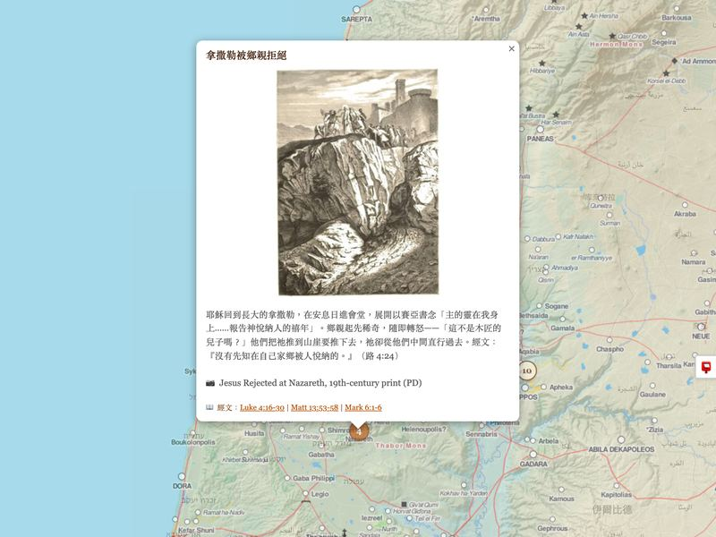
耶穌加利利事工
AD 27-30 從受洗到登上變像山
公元 27 至 30 年間，拿撒勒人耶穌離開木匠鋪，走下約旦河接受洗禮，隨即被聖靈引入曠野受試探。之後祂回到加利利，以迦百農為基地，沿湖呼召彼得、安得烈、雅各、約翰，於迦拿行第一個神蹟，於山上講論八福，於曠野擘餅餵飽五千人。祂在該撒利亞腓立比的山泉旁聽見彼得認信，於是登上變像山露出榮光，然後堅定面上耶路撒冷。
2 條路線中國歷史
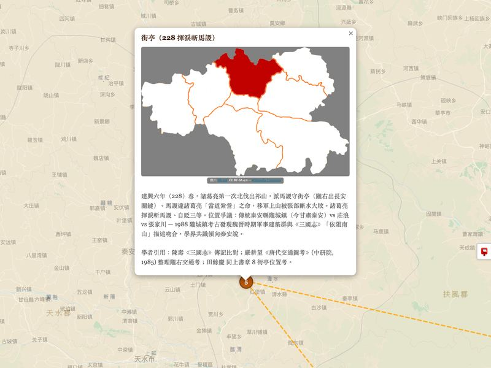
三國蜀漢北伐
AD 207 — 234 從隆中對到五丈原
三顧茅廬陳隆中對天下三分；208 赤壁火攻；219 漢中王；223 白帝託孤；228 街亭揮淚斬馬謖；234 諸葛亮卒於五丈原。沿陳壽《三國志》主線蜀漢核心 6 spots 涵蓋 27 年「鞠躬盡瘁」之軌。CCTS 三國 262 古地圖底圖。
1 條路線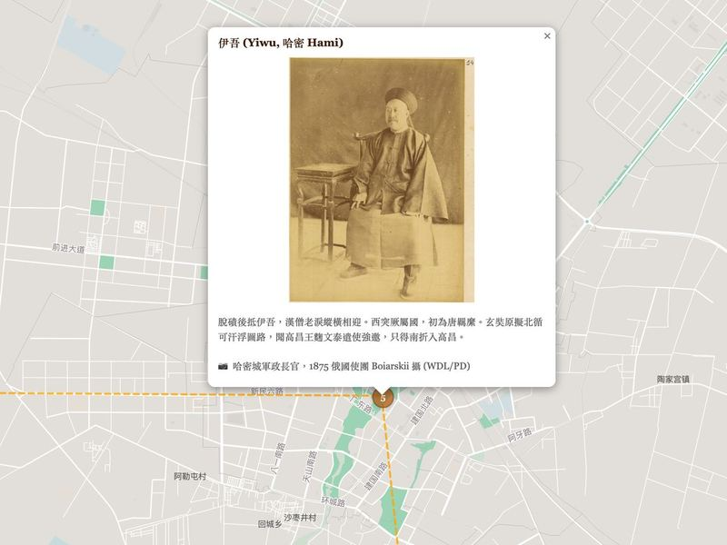
玄奘西行
AD 629-645 大唐西域記
唐代高僧玄奘 629 年自長安偷渡出關，歷五萬里、百餘國，入天竺求法十七年，於 645 年攜六百五十七部梵本佛經歸長安。兩段互動地圖涵蓋西行與歸程，沿途搭配敦煌莫高窟、高昌故城、那爛陀遺址等實景影像。
2 條路線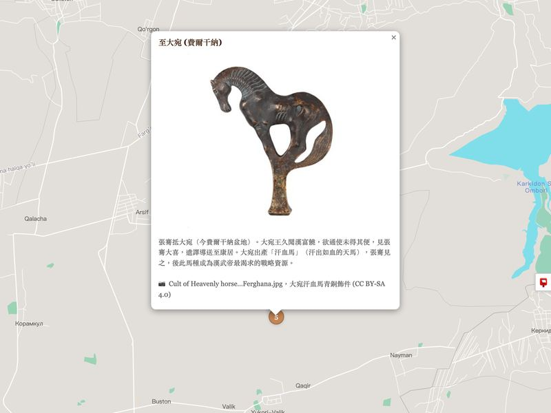
張騫通西域
BC 139-126 鑿空之旅
漢武帝建元二年（BC 139），張騫受命出使西域，要聯合大月氏夾擊匈奴。他從長安出發，才進河西走廊便被匈奴截獲，扣留十餘年、娶妻生子，始終持漢節未失。脫逃後翻越蔥嶺歷大宛、康居、大月氏、大夏，BC 126 年返長安，出發時百餘人僅餘二人。此行《史記》譽為「鑿空」。BC 119 年再使烏孫，派副使分赴諸國，絲綢之路正式通行。
2 條路線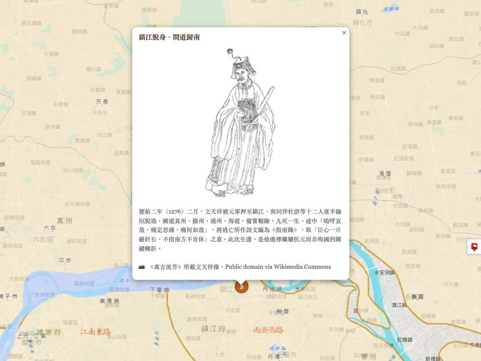
文天祥南逃
1275-1283 正氣留千古
德祐元年（1275）元軍渡江，南宋殘局如風中殘燭。廬陵書生文天祥散盡家財勤王，入衛臨安，使元議和被拘；脫身輾轉閩粵擁立二王，兵敗五坡嶺被俘。押解經伶仃洋寫下「人生自古誰無死，留取丹心照汗青」，親眼見崖山蹈海。北解元大都，囚於燕獄三年作《正氣歌》，1283 年柴市就義。
2 條路線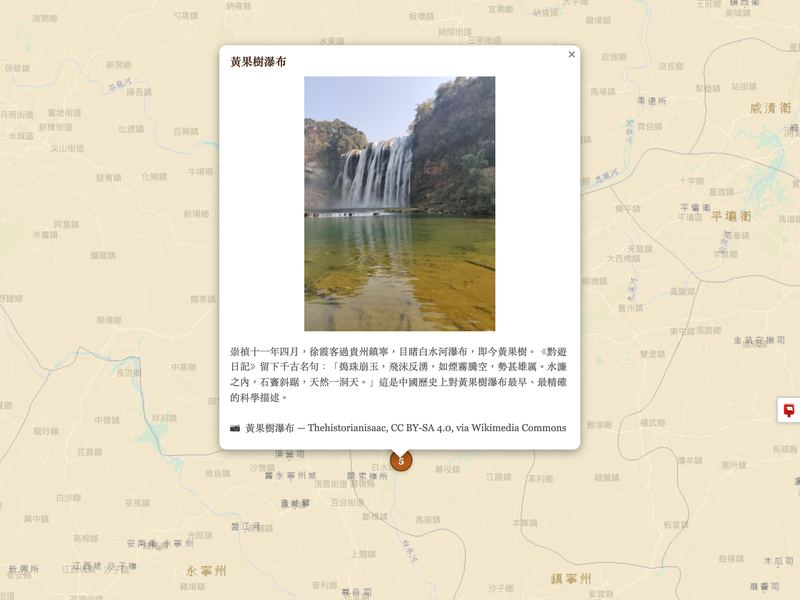
徐霞客西南壯遊
1636-1640 最後壯遊
崇禎九年（1636）秋，五十歲的徐霞客從江陰出發踏上最後一次壯遊，經浙、贛、湘、粵西、黔、滇，歷時四年，行程逾兩萬里。他在桂林探獨秀峰、在貴州記下黃果樹瀑布，深入雲南考察石林、滇池、洱海，登上雞足山金頂。1640 年冬因足疾由麗江土司木增以竹輿護送東歸，次年春病逝家中。《徐霞客遊記》六十餘萬字為明代地理學巔峰。
1 條路線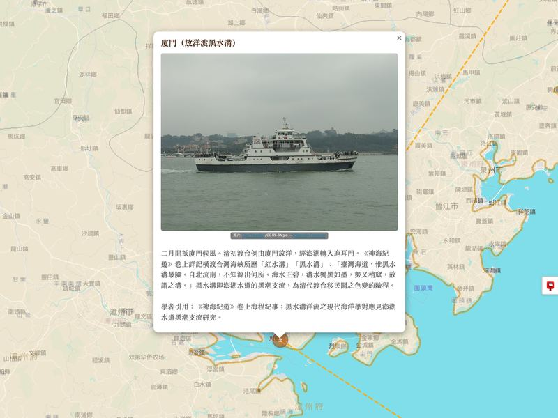
郁永河裨海紀遊
AD 1697 康熙採硫紀行
康熙三十六年（1697）郁永河渡黑水溝赴台採硫：二月二十五日鹿耳門登岸，四月初七乘牛車自府城北上縱貫西部諸番社，四月二十七日抵淡水，於北投勘硫煉硫，十月工竣返棹。17 spots / 2 segments，路線對齊中研院 THCTS〈郁永河《裨海紀遊》路線圖〉考證，疊 CCTS 清 1820 + 臺灣百年歷史地圖 1897。
2 條路線大航海時代
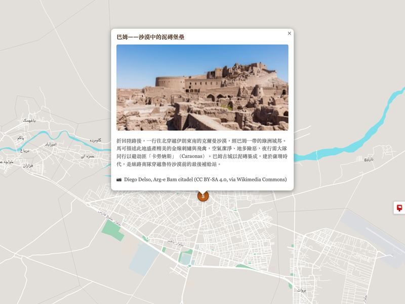
馬可波羅東來
1271-1295 The Travels
1271 年，十七歲的威尼斯少年馬可波羅隨父叔從威尼斯啟航，經阿卡、大不里士、荷姆茲，折返陸路翻越巴達克尚、帕米爾、塔克拉瑪干至上都覲見忽必烈。在元朝任職十七年，1291 年護送闊闊真公主自泉州海路西返，經占城、蘇門答臘、錫蘭、馬拉巴，1295 年回到威尼斯。口述成書《東方見聞錄》為歐洲打開了通往亞洲的想像。
2 條路線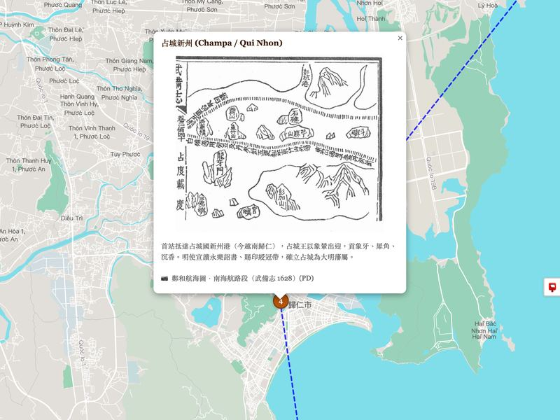
鄭和下西洋
AD 1405-1433 明代寶船七下西洋（首 + 中 + 末三段）
永樂至宣德年間，明廷七次派鄭和率寶船隊遠航西洋，足跡達東南亞、印度、阿拉伯、東非。兩段互動地圖呈現「首航」與「遺作」——1405 年的龍江寶船初啟 vs 1433 年鄭和卒於古里的最後一航——跨越二十八年的壯舉收束。
3 條路線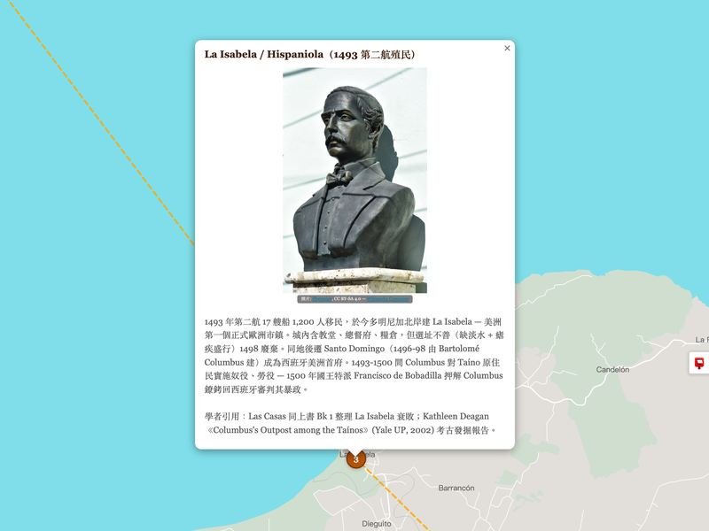
哥倫布四次航海
AD 1492 — 1506
Cristóbal Colón 1492 西班牙天主教雙王資助下從 Palos 出航尋亞洲新航路；首登巴哈馬 San Salvador 開啟「大西洋世界」。四次航海關鍵節點 6 spots 至 1506 Valladolid 葬地。爭議含 Watling Island 首登定位、1500 Bobadilla 押解審判、當代去殖民史學重審。
1 條路線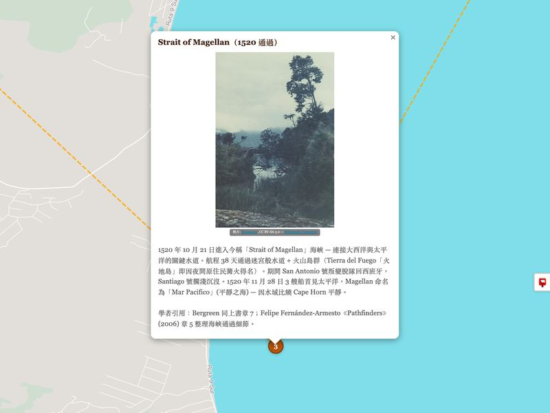
麥哲倫環球航行
AD 1519 — 1522
Fernão de Magalhães 葡萄牙人轉投西班牙王室，1519 率 5 艘船 270 人尋香料群島西航路 — 史上首次環球航行。3 年後僅 Victoria 號 + 18 人由 Elcano 領回 Sanlúcar。Magellan 1521 死於菲律賓 Mactan 島。7 spots 含太平洋穿越壞血病劫難。
1 條路線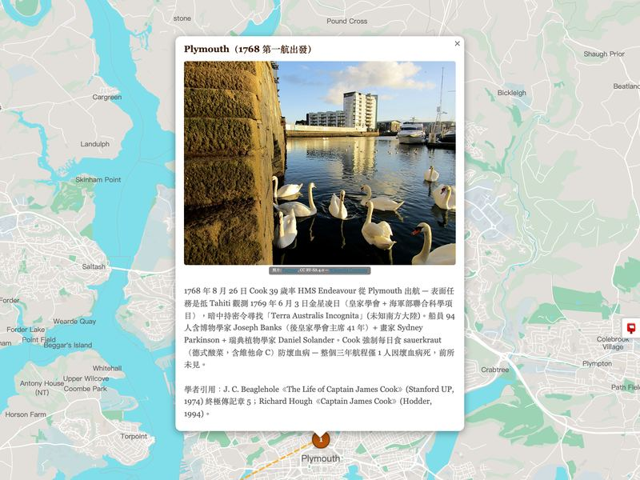
庫克船長太平洋三航
AD 1768 — 1779
James Cook 三度環行太平洋：1768-71 觀金星凌日 + 紐澳測繪、1772-75 首船過南極圈、1776-79 西北通道尋找。現代精確航海開創者（用 chronometer 測經度），死於夏威夷 Kealakekua 灣。7 spots 含 Sahlins vs Obeyesekere「Cook 是神？」學術論戰。
1 條路線